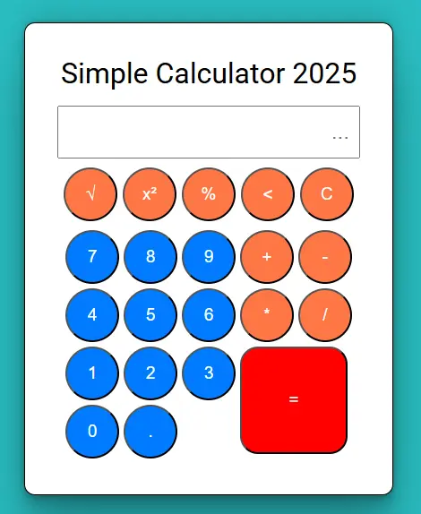

ToDo List Enable users to add, delete, and mark tasks as complete. Use local storage to save tasks across page reloads. CHECK IT OUT!
Pomodoro Timer Start, stop, reset Pomodoro timers (25 minutes) Automatically transition between work sessions and short/long breaks. CHECK IT OUT!
Weather App Retrieve real-time weather data using an API OpenWeatherMap. Show current conditions, forecast, and extra details. CHECK IT OUT!
 Simple Calculator Implement fundamental arithmetic operations: addition, subtraction, multiplication, and division. Include some features like root, square, percent. And plays sound. CHECK IT OUT!
Tic-Tac-Toe Game (S.T.A.L.K.E.R EDITION) Implement the game mechanics to manage player turns and identify the winner. Design an intuitive interface with functionality to reset the game. CHECK IT OUT!
Real-Time Chat Implement real-time messaging functionality using WebSockets or equivalent technologies. Support private one-on-one direct messaging between users. IN DEVELOPMENT